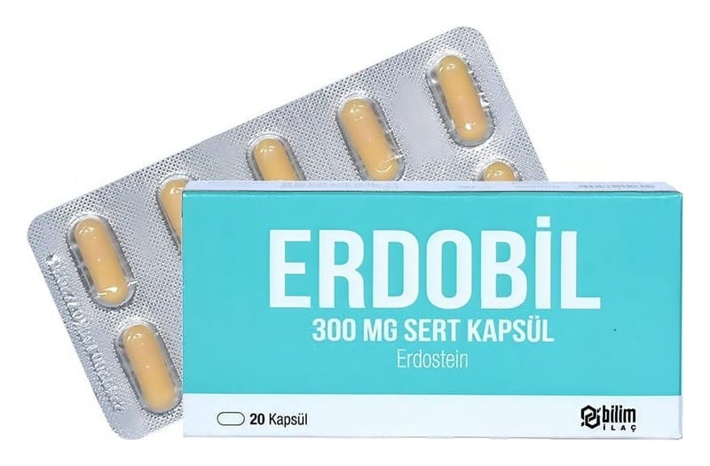

Erdobil 300 mg Sert Kapsül, 20 Adet

Ne için kullanılır
KT · Bölüm 1ERDOBİL, beyazımsı renkte toz içeren, sarı renkli 20 adet kapsül içeren blisterlerde ambalajlanmıştır.
ERDOBİL, mukolitikler grubundan bir etkin madde olan erdostein içerir.
ERDOBİL, aşağıdaki durumlardan herhangi biri için kullanılır: Farenjit (yutak iltihabı), larenjit (gırtlak iltihabı), trakeit (soluk borusu iltihabı), bronşit ve bronkopnömoni (akciğer ile nefes borularının iltihabı) gibi üst ve alt solunum yolu enfeksiyonlarında balgamın atılması amacıyla
Özellikle kronik bronşit ve kronik obstrüktif akciğer hastalığında (KOAH) solunum yollarında biriken yoğun kıvamlı balgamın atılması amacıyla